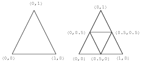

Next: Base Textures
Up: Mesh Painting on Subdivision
Previous: Introduction
Mesh painting in 3D space is a common practice in companies
that work on animation and special effects.
Several commercial packages that allow users to paint on 3D objects are available.
Hanrahan and Haeberli [7] have described a system for painting on 3D
parameterized meshes using a 2D input device.
Painting is performed directly on the
mesh in a WYSIWYG (What-You-See-Is-What-You-Get) fashion.
A user can manipulate the parameters used to
shade a 3D object by applying pigments to its surface.
The pigment has all the properties associated with
material shading models such as diffuse and specular color and surface roughness.
This idea was used by Agrawala et al. [1],
along with a flood-fill algorithm for painting mesh vertices.
Incremental drawing allows users to paint
large meshes interactively without the use of expensive hardware.
Since hardware has improved greatly in the past five years,
their methods could probably be extended to larger meshes.
In their system, a force feedback Polhemus device is used to paint on a triangle mesh.
Kuester et al. [10]
have developed techniques for interactive modeling environments using immersive technologies.
The inTouch system presented in [6] is a system for painting and modeling
subdivision surfaces.
This system uses a haptice device for multiresolution mesh editing and mesh painting.
Ferley et al. [5] use isosurfaces to represent the surface being modeled.
This approach enables a user to model surfaces of arbitray shape and topology.
Figure:
Subdivision of a quadrilateral and corresponding texture coordinates
|
|
Figure:
Subdivision of a triangle and corresponding texture coordinates
|

|
Next: Base Textures
Up: Mesh Painting on Subdivision
Previous: Introduction
servant of allah
2010-11-10